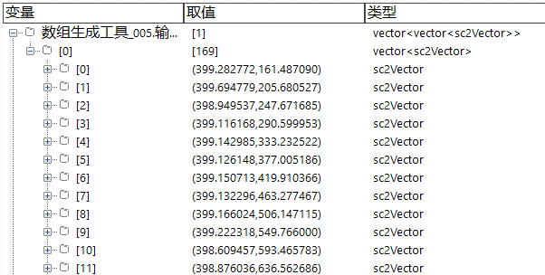
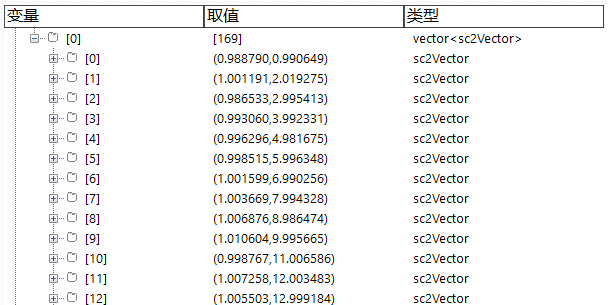
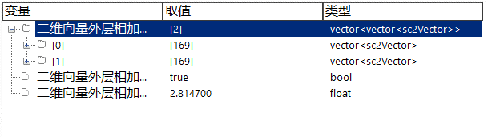

将两个vector<vector



| 分类 | 参数名称 | 参数描述 |
|---|---|---|
| 属性窗口 | 无 | 无 |
| 图像窗口 | 无 | 无 |
| 数据链 | 输入二维向量A | 输入第一组二维向量。 |
| 输入二维向量B | 输入第二组二维向量。 | |
| 高级界面 | 无 | 无 |
| 分类 | 参数名称 | 参数描述（参数的含义） |
|---|---|---|
| 监视窗口 | 输出二维向量 | 组合后的结果。 |
| 执行结果 | 工具执行结果。 | |
| 执行时间 | 工具执行时间。 | |
| 图像窗口 | 执行结果 | 显示工具执行结果，执行成功显示“OK”，执行失败显示“NG”，同监视窗口的执行结果参数。 |
| 数据链 | 输出二维向量 | 输出组合后的结果，供其他工具使用，同监视窗口“输出二维向量”参数。 |
无
参见“\Samples\二维向量外层相加工具.gvp”。